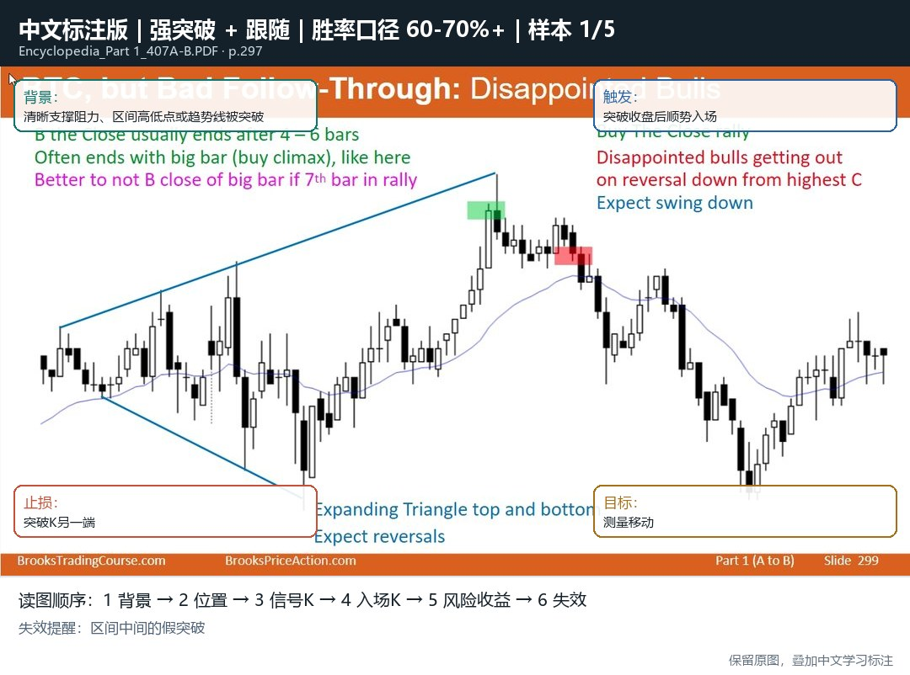

Supporting Path
辅助：系统学习路径
课程区用于补 Brooks 的阅读顺序和底层框架。真正查形态、看原图、做复盘，仍然回到上面的图表百科。
Chart Encyclopedia First
这个站的主体是图表百科。先查形态、看 Brooks 原图和中文标注，再用课程、字幕和资料库补充背景。

Main Workspace
这里是主体。按胜率、重要性和类别查 Brooks 形态；每个条目都要先看原图、中文标注、视频课总结和入场管理，再决定是否继续读课程。
Supporting Path
课程区用于补 Brooks 的阅读顺序和底层框架。真正查形态、看原图、做复盘，仍然回到上面的图表百科。
Supporting Theory
这些是理解图表百科的底层框架：市场周期、Always In、交易者方程、订单、背景过滤、交易管理和心理流程。它服务于读图，不抢百科的主位置。
Supporting Library
这里覆盖全部 SRT 字幕文件。它是百科条目的溯源资料，不作为主学习界面。
Supporting Materials
视频、字幕、PPT、书籍、图表百科、补充课程都按模块归档。需要回看原文件时再进入。
Supporting Glossary
这些词会反复出现在图表百科里。忘记术语时再查。